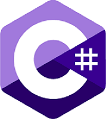

C#
C# (vyslovuje se "See Sharp") je moderní, objektově orientovaný a typově bezpečný programovací jazyk. Jazyk C# umožňuje vývojářům vytvářet mnoho typů zabezpečených a robustních aplikací, které běží v .NET. Jazyk C# má své kořeny v rodině jazyků C a programátorům v jazyce C, C++, Javě a JavaScriptu je hned povědomé. Tato prohlídka poskytuje přehled hlavních součástí jazyka v jazyce C# 8 a dřívějších verzích.
Co je C# a proč je populární?
C# je objektově orientovaný programovací jazyk orientovaný na komponenty. Jazyk C# poskytuje jazykové konstrukce pro přímou podporu těchto konceptů, díky kterým je jazyk C# přirozeným jazykem pro vytváření a používání softwarových komponent. Od svého původu přidává jazyk C# funkce pro podporu nových úloh a nově vznikajících postupů návrhu softwaru. V jádru je jazyk C# objektově orientovaný . Definujete typy a jejich chování.
K čemu se C# používá?
Většina webových aplikací a služeb souvisejících s produkty společnosti Microsoft je napsána v jazyce C#. Známá stránka stackoverflow.com je napsána v jazyce C# pomocí frameworku.NET. Stránky společností Microsoft a Dell jsou vytvořeny podobnou metodou.Jazyk C# se používá k vývoji desktopových aplikací pro systém Windows. Například Microsoft Visual Studio, Paint.NET jsou napsány v jazyce C#. Platforma.NET, přesněji Windows Forms, je základem aplikací jako Skype, Microsoft Office nebo Photoshop. Vývojáři her znají engine Unity. Používá se k vytváření 2D a 3D počítačových her. Programování v Unity vám umožní soustředit se na obsah hry, aniž byste se museli zabývat mnoha technickými detaily. Provádí se převážně v jazyce C#. Rust, Hearthstone, Fall Guys a další hry jsou vytvořeny v Unity v jazyce C#. Kromě toho umožňuje interakci s DirectX – sadou komponent pro grafiku a zvuk ve hrách.
Proč se učit
Pojďme si zopakovat, proč se naučit C#:
1. Jednoduchý, moderní, mnohoúčelový
2. Mezinárodní podpora je též velmi důležitá
3. Jazyk je vhodný pro vývoj softwarových komponent distribuovaných v různých prostředích
C# editory
Zde je pár příkladů editorů jazyka C#:
Rider IDE
Visual Studio Code
SlickEdit
Scriptcs
Monodevelop